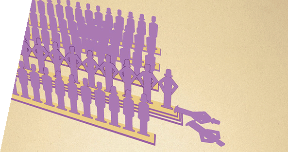
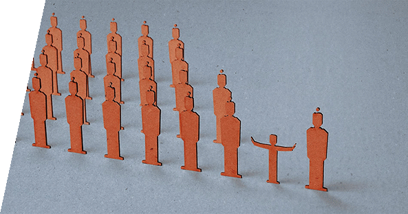

Die Anderen ... Seiten betrachtenMagazin für Diskurs und Meinungsbildung
Mindestlohn

- Gerhard Bosch, Thorsten Kalina, Claudia Weinkopf Deutschland braucht den Mindestlohn
- Neue internationale Studien zeigen, dass selbst vergleichsweise hohe Mindestlöhne positive Effekte auf der betrieblichen Ebene und auf dem Arbeitsmarkt haben können.

- Dr. Guido Raddatz Mindestlöhne gefährden Arbeitsplätze
- Vor allem die trotz des jüngsten Aufschwungs auf dem Arbeitsmarkt noch immer schlechten Beschäftigungschancen von Geringqualifizierten, Langzeitarbeitslosen oder Menschen mit mehreren Vermittlungshemmnissen könnten durch einen Mindestlohn weiter Schaden nehmen.
Beschneidung
- Leyla Fröhlich-Güzelsoy Das Beschneidungsverbot dient nicht dem Kindeswohl
- Der unhaltbare euphemistische Vergleich mit der „weiblichen Beschneidung“ wird bemüht. Sie ist nicht vergleichbar, weil es sich bei der sogenannten „Beschneidung“ der Mädchen um eine Genitalverstümmelung handelt, die weder im Judentum noch im Islam zu finden ist.

- Bettina Röhl Das Wohl des Kindes geht vor
- Muss der religiöse Mensch seinem Gott gegebenenfalls nein sagen, wenn das von seiner Religion geforderte Ja dem Grundgesetz zuwiderläuft? Nichts weniger als diese Kardinalfrage hat das Landgericht Köln in seiner Entscheidung zur Strafbarkeit einer religiös motivierten Beschneidung eines vierjährigen muslimischen Jungen mit einem klaren Ja beantwortet.